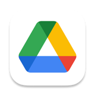
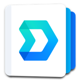

Niet in een browser, niet als download, maar gewoon het bestand zelf, in hun eigen Dropbox, Google Drive, Synology Drive of op de server. Geen upload, geen account, geen spoor.
Je kent dit probleem: jij hebt het bestand al voor je, Anna moet gaan zoeken, bladeren en gokken dat ze het juiste bestand heeft. Kortom, gemartel.

Google Drive
Synology Drive
OneDrive“OneDrive's synchronisatiemethode(n) zijn een puinhoop. Blijf hier maar gewoon heel ver vandaan.”
De link bevat alleen het pad binnen jullie gedeelde map. Het bestand zelf gaat nergens heen. Wie de map niet heeft, heeft aan de link niets.
Het pad staat achter het hekje in de link, en dat deel stuurt een browser nooit mee. De pagina op share-link.nl is één statisch bestand: geen database, geen analytics, geen cookies. Hooguit is te zien dát de pagina is geopend, zoals bij elke website. Nooit welk bestand, welke map of door wie.
macOS kan geen link maken die op een andere Mac werkt, omdat ieders gedeelde map ergens anders op schijf staat. Sharelink vertaalt het pad op de Mac van de ontvanger naar diens eigen map. Dat is alles, en de code staat open.
SMB-shares op een fileserver of NAS. Niet gemount? Dan mount de app hem eerst, met je eigen inloggegevens.
Mijn Drive en gedeelde drives. Taalonafhankelijk: een link van een Engelse Mac werkt op een Nederlandse.
Klassiek in de homefolder én de nieuwe File Provider-versie onder CloudStorage. Teammappen en eigen mappen.
De synchronisatiemap van de Synology Drive Client, op de standaardlocatie.
“OneDrive's synchronisatiemethode(n) zijn een puinhoop. Blijf hier maar gewoon heel ver vandaan.”Geen link, met opzet
Verzender én ontvanger hebben beide de app nodig.
Sharelink kijkt in welke gedeelde map het bestand staat en maakt er een gewone https-link van, zoals https://share-link.nl/#file/dropbox/Projecten/…. Zo'n link is klikbaar in Mail, Outlook, Teams en WhatsApp.
De pagina stuurt de link meteen door naar sharelink://…, het adres van de app op de Mac van de ontvanger, en sluit zichzelf zodra de app het overneemt.
Op die Mac zoekt Sharelink de eigen Dropbox-, Google Drive- of Synology-map, of mount de servershare, en opent het bestand of zet het klaar in Finder.
Plak deze opdracht in ChatGPT, Claude, Gemini of welke AI je ook gebruikt. De code is openbaar, dus de AI kan hem regel voor regel lezen en je vertellen of je dit op de Macs van je medewerkers wilt.
Ik overweeg een macOS-app in te zetten binnen onze organisatie: Sharelink - Finder. Website: https://share-link.nl Broncode: https://github.com/gerbenhoogendam/sharelink-finder Wat de app belooft: je selecteert een bestand in Dropbox, Google Drive, Synology Drive of op een servershare en maakt er een link van die bij een collega precies dat bestand opent, in diens eigen lokale kopie. De makers stellen dat er niets wordt geüpload, niets wordt gelogd en dat er geen gegevens over onze organisatie, onze bestanden of onze medewerkers naar buiten gaan. Onderzoek dat grondig en onafhankelijk, alsof je onze security officer bent. Lees de volledige broncode in de repository (CloudLinks.swift, App.swift, docs/index.html, build.sh, install.sh, release.sh, Info.plist en Sharelink.entitlements) en beantwoord: 1. Netwerkverkeer. Maakt de app zelf ooit een netwerkverbinding, en zo ja naar welke adressen? Wat staat er precies in een link, en wat bereikt de server op share-link.nl wel en niet? Leg uit wat het hekje (#) in de link doet. 2. Gegevens. Welke informatie over bestanden, mappen, gebruikersnamen of de computer komt in een link terecht, en bij wie kan die terechtkomen? 3. Rechten. Welke macOS-permissies en entitlements vraagt de app (Finder-automatisering, hardened runtime, sandbox) en waarvoor worden ze gebruikt? Vraagt de app iets dat meer is dan nodig? 4. Lokaal gedrag. Wat doet de app met het bestandssysteem? Kan een link iets openen buiten onze gedeelde mappen, bijvoorbeeld via ../ of een absoluut pad? Welke bestandstypen opent de app wel en niet automatisch? 5. Verspreiding. Is de app gesigneerd en genotariseerd, en klopt wat de releasenotes daarover zeggen met de scripts in de repository? 6. Afhankelijkheden. Gebruikt de app externe bibliotheken, analytics, crashrapportage of een updatemechanisme dat naar buiten belt? 7. Misbruik. Welk risico loopt een medewerker die op een kwaadaardig gemaakte sharelink-link klikt? Wat is het slechtst denkbare scenario? Geef daarna een duidelijk oordeel: kunnen wij deze app met een gerust hart op de Macs van onze medewerkers installeren? Onderbouw elk punt met het bestand en de regel waar je het in de code hebt gezien, zeg expliciet wat je niet hebt kunnen controleren, en noem de voorwaarden of aanpassingen die je zou aanraden voordat we uitrollen.
Een goed antwoord noemt per punt het bestand waarin het staat, zegt wat de AI níét kon controleren, en eindigt met een oordeel plus voorwaarden. Krijg je alleen geruststellende woorden zonder verwijzingen naar de code, vraag dan door.